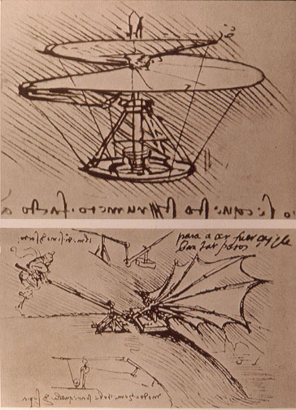

这可不是 Graal VM …
你听说过这些东西吗：
- MethodHandle
- invokedynamic
- Continuation
- 值类型
- …
达芬奇的直升机
上面的东西大多都是在 Java 7 出现的，也是 mlvm 项目的主要产出，意图打造一个可以允许多种语言的虚拟机。这个项目又被称为 the Da Vinci Machine Project。

这张图就是出自达芬奇，已经快有 600 年的历史，而它描述的自然是一个直升机的设想。
mlvm 项目的历史也超过十年了。在 2009 年，mlvm 项目展现了雄伟的野心：
动态调用
动态调用也就是 Dynamic Invocation，已经在 Java 7 中很好地实现了 —— invokedynamic 指令。
这条指令，不同于已存在的四个指令，是允许动态调用的，同时也包含了其他的许多好处，比如消除了 int 这样的原始类型装箱拆箱的消耗。
它的动态调用允许 Java 代码更改某处调用点（调用点，当然就是 CallSite）实际调用的方法，就像写入一个字段一样轻松简单。而这里“实际调用的方法”，就是下面的轻量方法对象。
可是动态调用呢？
在本文写作时（Java 19 已发布），Java 本身不带有任何涉及动态调用的代码。虽说如此，Java 中还是有不少地方使用到了 invokedynamic。
Lambda 表达式中，invokedynamic 指令用于生成接口的实现类。
从 Java 9 开始，invokedynamic 用于实现字符串拼接。
从 Java 16 开始，Record 类中 invokedynamic 用于生成 toString（该实现其实很不好）、equals、hashCode 这样的方法。
从 Java 17 开始，switch 表达式也使用 invokedynamic 生成 switch table。
除了 Lambda 表达式的实现之外，其他几个调用的 MH 都是使用 MethodHandles 中的方法进行组合而实现。
以上内容都不是动态调用，反而倒更像是某种意义上 Java 的宏了。
轻量方法对象
Lightweight method objects，在 Java 7 中最终作为 MethodHandle 落地；更准确地描述可能是“一段代码”。
提到 MethodHandle 或者 MH，大多数人和互联网上的文章都会拿来和反射 API 进行比较，这里自然也拿来比较一下。
对于方法调用，反射 API 是有设计缺陷的：
getMethod、getField这样的操作，并不允许提供方法返回值或者字段类型作为参数进行查询 —— 分明 JVM 中存在这样的机制，更别说 JVM 允许名称和参数列表项目而返回值不同的方法多个存在了；- 什么是
getMethod，什么又是getDeclaredMethod呢？在语言层面和 JVM 层面，只有“可访问”和“不可访问”的区别，反射 API（很长一段时间）没有区别可访问的能力； - 更别说
Method#invoke的时候的装箱拆箱、可变长参数的数组创建、调用时权限检查等性能问题了。
Java 7 出现的 MH 解决了上面的问题，尽管它相比反射 API 缺少了很多功能。与反射 API 相比，MH 更符合一个动态调用 API 的定位：
- 字节码怎么写，
Lookup#findXXX就怎么写； - 语义和字节码中这里能访问的东西，MH 就能访问；语义不能的，MH 就不能；
- 字节码里怎么调用，MH 就怎么调用，不会多装箱，或者把抛出的一场包装一层
InvocationTargetException； - 直接调用什么性能，MH 调用就是什么性能（一定条件下）。
当然，MH 缺少了调用的方法名称、声明的类之类的信息，只保存了调用方法的类型，所以称之为轻量方法对象。
LambdaForm - 另一个 JIT？
MH 不只是某种反射的替代品。在 JEP 160 中 JDK 引入了 LambdaForm，用于表达 MethodHandle。
LambdaForm 是一系列方法调用、若干个参数和临时变量的“一段代码”。为了简化表达，这些参数和变量只有五种类型，也就是引用类型和四个基础类型（int、long、float、double）和 void。
以 LambdaForm 的文档为例：
(a0:J)=>{ a0 }
== identity(long)
(a0:I)=>{ t1:V = System.out#println(a0); void }
== System.out#println(int)
(a0:L)=>{ t1:V = System.out#println(a0); a0 }
== identity, with printing side-effect
(a0:L, a1:L)=>{ t2:L = BoundMethodHandle#argument(a0);
t3:L = Class#cast(t2,a1); t3 }
== invoker for identity method handle which performs castLambdaForm 设计为可以轻易地翻译到字节码和 JIT IR，可以看作是字节码的抽象表达形式。
轻量字节码加载
Lightweight bytecode loading，可能你从来没有见过？
Java 15 包括了 JEP 371: Hidden Classes，或者说是隐藏类；而在 Java 15 之前，这样的功能通过 Unsafe#defineAnonymousClass 实现。
这个功能用于生成一些轻量的、用于调用其他方法的没有名称的类。
如果是调用方法的话，是不是和 MH 非常类似？它与 MH 最大的区别是，它是类，所以可以有字段，被用于 Lambda 表达式中的变量捕获。
接口注入
Interface injection，接口注入，动态语言中通常有这样的功能，可惜 JVM 尚且没有。
这个设计的原型描述1是相对保守的，注入接口后不会影响已有类的解析和调用，但是 instanceof 和类型转换会反馈注入的接口。
运行时接口注入虽然没有被 JDK 加入，但是 DCEVM 项目（现在是 JetbrainsRuntime）可以实现这一功能。Mixin 这样的项目也可以在类加载的时候注入接口。
Continuations
Continuation 就是程序后面的部分，或者说剩下的部分。
System.out.println("ザ・ワールド 時よ止まれ！");
Thread.sleep(5000);
System.out.println("ザ・ワールド 時は動き出す");在执行到 Thread#sleep 时，自然最后一个 System.out.println 是当前的 Continuation。而将 Continuation 明确表示出来（比如一个 Lambda 表达式），并把它传递（passing）到其他地方的代码，就叫 continuation-passing style。
System.out.println("ザ・ワールド 時よ止まれ！");
Runnable continuation = () -> System.out.println("ザ・ワールド 時は動き出す");
CompletableFuture.delayedExecutor(5000, TimeUnit.MILLISECONDS).execute(continuation);而不将 Continuation 明确表现出来，而是让 JVM 管理，就是这个项目的目标。
尽管 mlvm 项目的 continuation 并没有最终实现，但是另一个项目 loom 最终在 Java 19 实现了 JVM 上的 Continuation 和虚拟线程。
尾递归
Tail calls/tail recursion，也就是尾调用、尾递归，在函数式编程中更为常见。对于尾递归，我们可以借用 Continuation 的概念，定义为“方法最后的调用的 Continuation 是其自身”。
mlvm 项目对于尾递归的实现是添加一系列新指令，比如 tailcallinvokestatic 这样。当然，这样的实现最终没有落地。
loom 项目似乎也会提供对于尾调用的支持，虽然目前还没有。
元组和值类型
元组（Tuple），可以简单的理解为几个东西的组合，好比一个坐标 Vector3i 就是 (x: int, y: int, z: int) 这样的元组。
值类型，是相对于引用类型而言的概念，这样的类型在 JVM 中直接保存在栈上，如 int、long 一样。
在 mlvm 项目中，值类型会被实现为类似 {LBlockPos;III} 这样的类型签名，通过 vaccess getfield 这样的指令读取字段，并且值类型是可变的。在现在看来，这样的设计自然是复杂且不好的。
值类型自然在 mlvm 项目没有落地。随后的 valhalla 项目接过了值类型的担子，并且同时准备提供泛型特化的特性。
后记
mlvm 项目未尝不是某种伊卡洛斯的坠落，它的目标在十年后仍在进行。
虽然 Graal 项目本身的目标是用 Java 编写 compiler，却实现了 mlvm 设想的 Multi Language VM。